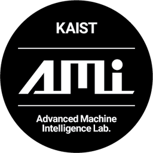
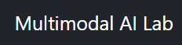

Daeen Kabir
About Me
🎓 KAIST Undergraduate
I'm a 5th-year student at Korea Advanced Institute of Science & Technology (KAIST), majoring in
Computer Science with a minor in Electrical Engineering and AI.
💼 Professional Experience
Formerly as an AI Engineer at MolpaxBio, I focused on medical AI imaging. Alongside that, my research spans 3D computer vision, latent diffusion, and low-resource NLP. Currently, I'm working on efficient diffusion-based 3D object rendering.
🤖 Passion & Collaboration
I'm passionate about bridging language and 3D understanding to create spatially intelligent systems.
🏃♂️ Beyond Academics
In my free time, I like to study quantitative finance 💹, go running 🏃♂️, and enjoy climbing
🧗♂️.
I am open to impactful any collaboration opportunities, so feel free to reach out for any collaboration projects or inquiries.
News
Education
KAIST, Korea Advanced Institute of Science and Technology
Aug 2020 - Jun 2025 (Expected Date of Graduation)
B.S. School of Computing (Major)
School of Electrical Engineering (Minor)
Semi-minor in Artificial Intelligence
Work Experience

AI Engineer Intern, MolpaxBio
Dec 2023 - June 2024-
Developed robust models using hospital data for:
- Cancer prognosis and staging classification from whole-slide images.
- Detection and identification of liver cellular structures.
- Generation of realistic lung tissue whole-slide images.
-
Implemented advanced deep learning methodologies:
- Multi-instance learning, self-supervised learning, and feature-bagging for classification.
- YOLO-based models for precise liver structure detection.
- Generative Adversarial Networks (GANs) for synthesizing lung tissue slide images.
-
Delivered high-performance outcomes:
- Classification accuracy and AUC consistently above 90% or even 95% across multiple datasets.
- Mean Intersection over Union (mIoU) of 0.78 for liver structure detection.
- Fréchet Inception Distance (FID) score of 12.97 for generated lung tissue images, indicating high realism.

Undergraduate Researcher, AMI Lab
Mar 2025 - Present- Working on optimization-free 3D mesh texturing leveraging correspondence markers.
- Reproduced results for Zero-123 pose-conditioned diffusion model with additional implementation of DDIM inversion for forward noising process, improving the PSNR, LPIPs, SSIM of novel-view synthesis.
- Reproduced a diffusion-based novel-view synthesis pipeline that utilizes multi-view epipolar attention without any model training or fine-tuning.

Undergraduate Researcher, SGVR Lab
July 2024 - Jun 2025- Led research on 3D segmentation in dynamic scenes using Gaussian Splatting, novel-view synthesis, and pose-free reconstruction.
- Developed a 4D Gaussian-based interactive segmentation method leveraging motion cues and low-dimensional DINO features for click-based 3D segmentation (GitHub).
- Reproduced the training code implementation for "SADG: Segment Any Dynamic Gaussian Without Object Trackers" that utilizes Segment Anything Model (SAM) masks for semantically-aware contrastive learning-based segmentation of dynamic Gaussians (GitHub).

Undergraduate Researcher, Users & Information Lab
Sept 2024 - Feb 2025- Developed a benchmark dataset for Bengali linguistics, history, and culture, evaluated top LLMs on it, and led a research paper. Currently updating the paper based on review-feedbacks and aiming to publish in an upcoming conference.

Individual Study Researcher, Multimodal AI Lab
July 2024 - Aug 2024- Worked on text-to-audio generation using latent diffusion models.
- Reproduced results from the AudioLDM paper.
Projects

DINO-Matching 3D Gaussian Splatting
- Send supervisory signals through matching the rendered and GT images in DINO feature space
- Improvement of small object rendering and reduced artifacts
- Reduce blotchy artifacts during novel-view phase (from unseen camera viewpoints)

OECT: Optimized-Embedded Cluster & Tune
- Mitigate cold-start problem in NLP, a scenario with limited labeled data
- Improve fine-tuning performance through unsupervised intermediate training phase modification
- Used feature embedding-clustering to get soft pseudo-labels for supervision
- Achieved 2.6% and 4% increases in accuracy on topical and non-topical datasets

PSKD-ML: Progressive Self-Knowledge Distillation with Mutual Learning
- Developed innovative knowledge distillation method combining PS-KD with Deep Mutual Feature Learning
- Implemented novel collaborative training pipeline within single-network architectures
- Achieved state-of-the-art accuracy on CIFAR-100, reducing Top-1 error rates by up to 4.44% for ResNet-50
- Optimized computational efficiency through dynamic feature-level knowledge transfer

ZEPAdemics: Interactive Metaverse Education Platform
- Earned 4th place (honorable mention) out of over 100 participating teams in Naver ZEP track
- Developed an interactive metaverse platform integrating online education with virtual classrooms
- Implemented real-time attendance system, lecture video streaming, and interactive office hours
- Created virtual spaces for lectures, seminars, and group study sessions with screen sharing capabilities
- Designed scalable architecture supporting multiple universities and educational platforms
Awards
Undergraduate Research Participation (URP) Program
Fall 2024
Among selected recipients to receive KRW 3,000,000 funding to engage in research activities under Professor Sung-Eui Yoon from School of Computing(SGVR Lab).
National Scholarship Tier 1
Fall 2020 - Fall 2024
Tuition fee and full amount of school support fees supported by Korea Government
Papers & Preprints
BLUCK: A Benchmark Dataset for Bengali Linguistic Understanding and Cultural Knowledge
Daeen Kabir, Minhajur Rahman Chowdhury Mahim, Sheikh Shafayat, Adnan Sadik, Arian Ahmed, Eunsu Kim, Alice Oh
Contact Me
daeenkabirdk03@gmail.com
dk2001@kaist.ac.kr
Feel free to reach out for collaboration projects or any inquiries.